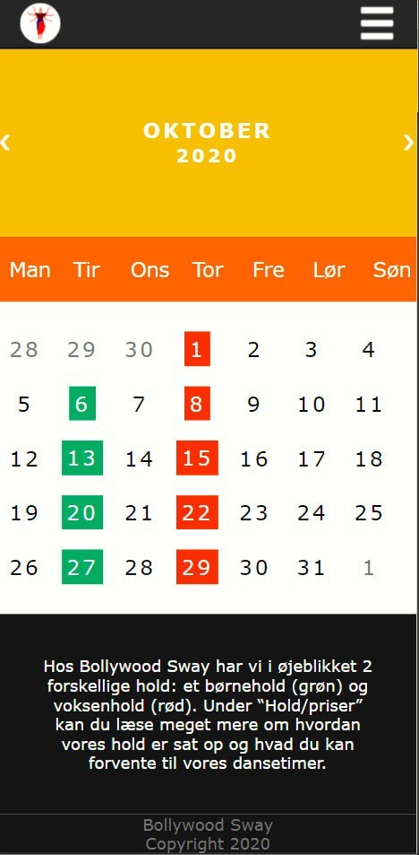

Desktop format
Jeg var ansvarlig for at kode vores
program underside, hvor vi valgte at have
en kalender, med overblik over de forskellige hold.
Mobil format

Den største udfordring var at bruge
media queries for første gang.
Kalenderens datoer skulle ligge på linje ved de
rette ugedage, både i desktop og mobil format,
hvilket heldigvis lykkedes til sidst.